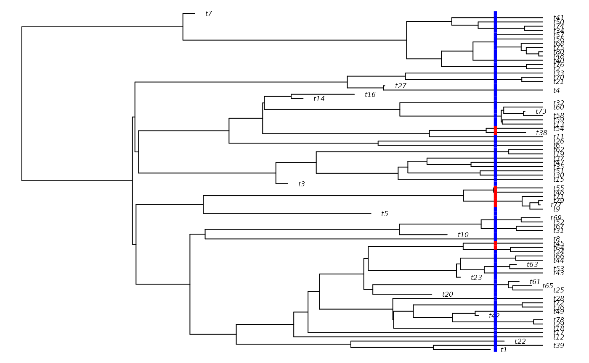
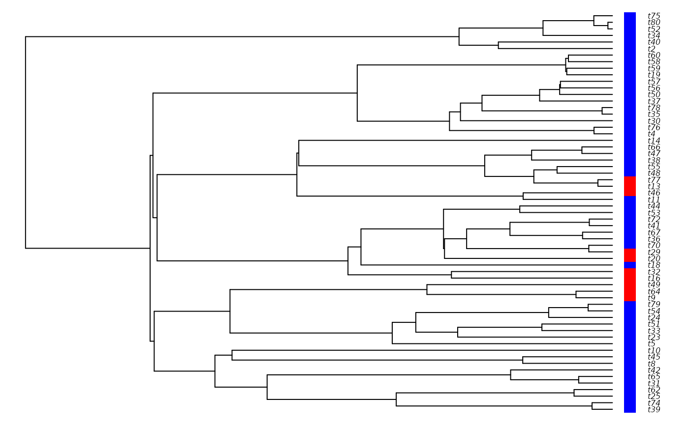

Using secsse with complete phylogenies (with extinction)
Pedro Santos Neves
2025-11-29
Source:vignettes/complete_tree.Rmd
complete_tree.RmdIntroduction
Most current studies of evolutionary dynamics make use of molecular phylogenies, which, for most groups, contain only information on extant species. However, when data on extinct species is available, usually through the presence of fossil data, we can use complete trees. Thus, we can leverage the data from extinct lineages for maximum-likelihood estimation with secsse.
Note that here “complete tree” should not be taken as a complete sampling fraction, that is, all known species being present in the phylogeny and there being no missing data, but rather the assumption that all currently extinct species are included. This follows the nomenclature of Nee et al. (1994), who also coined the term “reconstructed tree” for phylogenies for which there is no information on extinct lineages.
Set-up
Like all ML analyses with secsse, we first need a few things to start
with, starting with a dated phylogeny. For the purpose of this vignette,
we are going to simulate phylogenies with secsse_sim(). We
will simulate a reconstructed and a complete version of the same tree
under the CR model.
In order to simulate the trees, we need to specify the model and set
starting parameters. Here we simulate a similar constant rate (CR)
example to that of the Simulating with secsse vignette. For
more details on this model and full details of the functionality of
secsse_sim(), see
vignette("sim_with_secsse", package = "secsse").
library(secsse)
spec_matrix <- c()
spec_matrix <- rbind(spec_matrix, c(0, 0, 0, 1))
spec_matrix <- rbind(spec_matrix, c(1, 1, 1, 1))
lambda_list <- secsse::create_lambda_list(state_names = c(0, 1),
num_concealed_states = 2,
transition_matrix = spec_matrix,
model = "CR")
mu_vector <- secsse::create_mu_vector(state_names = c(0, 1),
num_concealed_states = 2,
model = "CR",
lambda_list = lambda_list)
shift_matrix <- c()
shift_matrix <- rbind(shift_matrix, c(0, 1, 3))
shift_matrix <- rbind(shift_matrix, c(1, 0, 4))
q_matrix <- secsse::create_q_matrix(state_names = c(0, 1),
num_concealed_states = 2,
shift_matrix = shift_matrix,
diff.conceal = FALSE)
# Set-up starting parameters
speciation_rate <- 0.8
extinction_rate <- 0.2
q_01 <- 0.1
q_10 <- 0.1
used_params <- c(speciation_rate, extinction_rate, q_01, q_10)
sim_lambda_list <- secsse::fill_in(lambda_list, used_params)
sim_mu_vector <- secsse::fill_in(mu_vector, used_params)
sim_q_matrix <- secsse::fill_in(q_matrix, used_params)
# Simulate and plot the tree
sim_tree_complete <- secsse::secsse_sim(lambdas = sim_lambda_list,
mus = sim_mu_vector,
qs = sim_q_matrix,
crown_age = 5,
num_concealed_states = 2,
seed = 40,
drop_extinct = FALSE)
if (requireNamespace("diversitree")) {
traits_for_plot_complete <- data.frame(
trait = as.numeric(sim_tree_complete$obs_traits),
row.names = sim_tree_complete$phy$tip.label
)
diversitree::trait.plot(tree = sim_tree_complete$phy,
dat = traits_for_plot_complete,
cols = list("trait" = c("blue", "red")),
type = "p")
} else {
plot(sim_tree_complete$phy)
}
#> Loading required namespace: diversitree
Fitting the model
Finally, we run secsse_ml() on our complete tree, much
in the same way as we would for one with extant species. However, this
time we make sure to set the is_complete_tree argument to
TRUE (defaults to FALSE if omitted). This
enables secsse to use the information present in extinct lineages.
idparsopt <- 1:4 # our maximum rate parameter was 4 -> We are keeping
# concealed and examined traits the same for the MLE.
idparsfix <- c(0) # we want to keep all zeros at zero
initparsopt <- rep(0.1, 4)
initparsfix <- c(0.0) # all zeros remain at zero.
sampling_fraction <- c(1, 1)
idparslist <- list()
idparslist[[1]] <- lambda_list
idparslist[[2]] <- mu_vector
idparslist[[3]] <- q_matrix
complete_tree_ml_CR <- secsse_ml(phy = sim_tree_complete$phy,
traits = sim_tree_complete$obs_traits,
num_concealed_states = 2,
idparslist = idparslist,
idparsopt = idparsopt,
initparsopt = initparsopt,
idparsfix = idparsfix,
parsfix = initparsfix,
sampling_fraction = sampling_fraction,
verbose = FALSE)
#> Note: you set some transitions as impossible to happen.Now we can see what our results look like.
CR_par_complete <- secsse::extract_par_vals(idparslist, complete_tree_ml_CR$MLpars)
complete_tree_ml_CR
#> $MLpars
#> $MLpars[[1]]
#> $MLpars[[1]][[1]]
#> 0A 1A 0B 1B
#> 0A 1.204038 0 0 0
#> 1A 0.000000 0 0 0
#> 0B 0.000000 0 0 0
#> 1B 0.000000 0 0 0
#>
#> $MLpars[[1]][[2]]
#> 0A 1A 0B 1B
#> 0A 0 0.000000 0 0
#> 1A 0 1.204038 0 0
#> 0B 0 0.000000 0 0
#> 1B 0 0.000000 0 0
#>
#> $MLpars[[1]][[3]]
#> 0A 1A 0B 1B
#> 0A 0 0 0.000000 0
#> 1A 0 0 0.000000 0
#> 0B 0 0 1.204038 0
#> 1B 0 0 0.000000 0
#>
#> $MLpars[[1]][[4]]
#> 0A 1A 0B 1B
#> 0A 0 0 0 0.000000
#> 1A 0 0 0 0.000000
#> 0B 0 0 0 0.000000
#> 1B 0 0 0 1.204038
#>
#>
#> $MLpars[[2]]
#> 0A 1A 0B 1B
#> 0.6272724 0.6272724 0.6272724 0.6272724
#>
#> $MLpars[[3]]
#> 0A 1A 0B 1B
#> 0A NA 0.1110798 0.1110798 0.0000000
#> 1A 0.1179893 NA 0.0000000 0.1110798
#> 0B 0.1179893 0.0000000 NA 0.1110798
#> 1B 0.0000000 0.1179893 0.1179893 NA
#>
#>
#> $ML
#> [1] -118.9226
#>
#> $conv
#> [1] 0
CR_par_complete
#> [1] 1.2040383 0.6272724 0.1110798 0.1179893
spec_rates_complete <- CR_par_complete[1]
ext_rates_complete <- CR_par_complete[2]
Q_01_complete <- CR_par_complete[3]
Q_10_complete <- CR_par_complete[4]
spec_rates_complete
#> [1] 1.204038
ext_rates_complete
#> [1] 0.6272724
Q_01_complete
#> [1] 0.1110798
Q_10_complete
#> [1] 0.1179893Comparing with reconstructed trees
It would be interesting to see how they compare with the same tree without any extant species. Let’s follow the standard procedure using a similar phylogeny - the same tree we used before - but where all the extinct lineages have been removed. We’ll keep all other model specification the same.
sim_tree_reconstructed <- secsse::secsse_sim(lambdas = sim_lambda_list,
mus = sim_mu_vector,
qs = sim_q_matrix,
crown_age = 5,
num_concealed_states = 2,
seed = 40,
drop_extinct = TRUE)
if (requireNamespace("diversitree")) {
traits_for_plot_reconstructed <- data.frame(
trait = as.numeric(sim_tree_reconstructed$obs_traits),
row.names = sim_tree_reconstructed$phy$tip.label
)
diversitree::trait.plot(tree = sim_tree_reconstructed$phy,
dat = traits_for_plot_reconstructed,
cols = list("trait" = c("blue", "red")),
type = "p")
} else {
plot(sim_tree_reconstructed$phy)
}
reconstructed_tree_ml <- secsse_ml(phy = sim_tree_reconstructed$phy,
traits = sim_tree_reconstructed$obs_traits,
num_concealed_states = 2,
idparslist = idparslist,
idparsopt = idparsopt,
initparsopt = initparsopt,
idparsfix = idparsfix,
parsfix = initparsfix,
sampling_fraction = sampling_fraction,
verbose = FALSE,
is_complete_tree = FALSE)
#> Note: you set some transitions as impossible to happen.
reconstructed_tree_ml_CR <- reconstructed_tree_ml$ML
CR_par_reconstructed <- secsse::extract_par_vals(
idparslist,
reconstructed_tree_ml$MLpars
)
reconstructed_tree_ml
#> $MLpars
#> $MLpars[[1]]
#> $MLpars[[1]][[1]]
#> 0A 1A 0B 1B
#> 0A 0.5927429 0 0 0
#> 1A 0.0000000 0 0 0
#> 0B 0.0000000 0 0 0
#> 1B 0.0000000 0 0 0
#>
#> $MLpars[[1]][[2]]
#> 0A 1A 0B 1B
#> 0A 0 0.0000000 0 0
#> 1A 0 0.5927429 0 0
#> 0B 0 0.0000000 0 0
#> 1B 0 0.0000000 0 0
#>
#> $MLpars[[1]][[3]]
#> 0A 1A 0B 1B
#> 0A 0 0 0.0000000 0
#> 1A 0 0 0.0000000 0
#> 0B 0 0 0.5927429 0
#> 1B 0 0 0.0000000 0
#>
#> $MLpars[[1]][[4]]
#> 0A 1A 0B 1B
#> 0A 0 0 0 0.0000000
#> 1A 0 0 0 0.0000000
#> 0B 0 0 0 0.0000000
#> 1B 0 0 0 0.5927429
#>
#>
#> $MLpars[[2]]
#> 0A 1A 0B 1B
#> 2.51771e-16 2.51771e-16 2.51771e-16 2.51771e-16
#>
#> $MLpars[[3]]
#> 0A 1A 0B 1B
#> 0A NA 4.027750e-02 4.027750e-02 0.0000000
#> 1A 8.885236e-08 NA 0.000000e+00 0.0402775
#> 0B 8.885236e-08 0.000000e+00 NA 0.0402775
#> 1B 0.000000e+00 8.885236e-08 8.885236e-08 NA
#>
#>
#> $ML
#> [1] -104.7962
#>
#> $conv
#> [1] 0
CR_par_reconstructed
#> [1] 5.927429e-01 2.517710e-16 4.027750e-02 8.885236e-08
spec_rates_reconstructed <- CR_par_reconstructed[1]
ext_rates_reconstructed <- CR_par_reconstructed[2]
Q_01_reconstructed <- CR_par_reconstructed[3]
Q_10_reconstructed <- CR_par_reconstructed[4]
knitr::kable(
data.frame(
Reconstructed_tree = c(
spec_rates_reconstructed,
ext_rates_reconstructed,
Q_01_reconstructed,
Q_10_reconstructed
),
Complete_tree = c(
spec_rates_complete,
ext_rates_complete,
Q_01_complete,
Q_10_complete
),
Generating_parameters = c(
speciation_rate,
extinction_rate,
q_01,
q_10
),
row.names = c(
"Speciation rate",
"Extinction rate",
"Transition rate 01",
"Transition rate 10"
)
)
)| Reconstructed_tree | Complete_tree | Generating_parameters | |
|---|---|---|---|
| Speciation rate | 0.5927429 | 1.2040383 | 0.8 |
| Extinction rate | 0.0000000 | 0.6272724 | 0.2 |
| Transition rate 01 | 0.0402775 | 0.1110798 | 0.1 |
| Transition rate 10 | 0.0000001 | 0.1179893 | 0.1 |
We see that including extinct species results in a better esimation particularly of the extinction rate. This effect is especially noticeable if there are many extinct species present in the tree. Additionally, we see that the estimation of the transition rate from state 1 to 0 also improved.
As a final note, do note that this is just a simple simulation example and care should be exercised with model selection and specification when fitting secsse to empirical datasets to make predictions about evolutionary patterns.
References
Nee S, May RM, Harvey PH. The reconstructed evolutionary process. Philos Trans R Soc Lond B Biol Sci. 1994 May 28;344(1309):305-11. https://doi.org/10.1098/rstb.1994.0068.